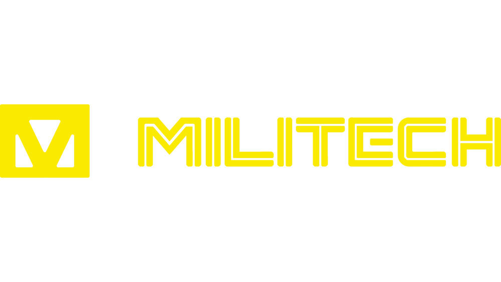

 <p clasa="melitech">«Милитех интернэшнл армаментс» (англ. Militech International Armaments), более известная как «Милитех» (англ. Militech) — крупнейшая мегакорпорация, одна из самых влиятельных компаний мира, которая специализируется на производстве и разработке боевого огнестрельного оружия средней ценовой категории, военной экипировки и транспорта военного назначения для вооруженных сил, частных организаций и локальных полицейских формирований, предоставлении охранных и военных услуг оборонительного и наступательного характера, разработке и производстве огнестрельного оружия, дронов, боевых имплантов, а также военной техники для боевых действий на суше, море и воздухе, поддержке федерального правительства НСША, вербовке солдат для армии и поставке техники, в том числе оружия и специализированного военного оборудования.</p>
        